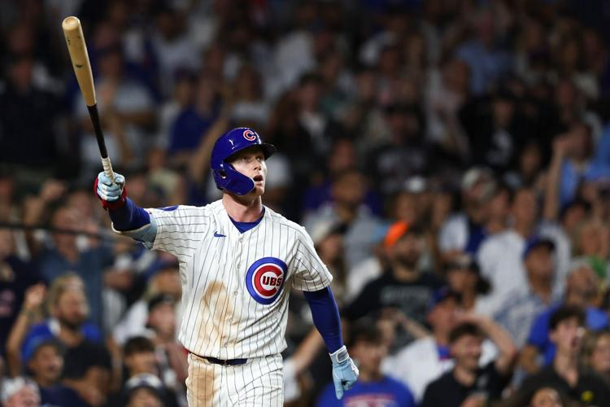
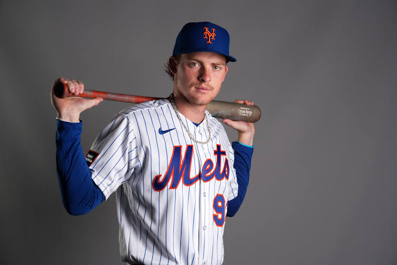
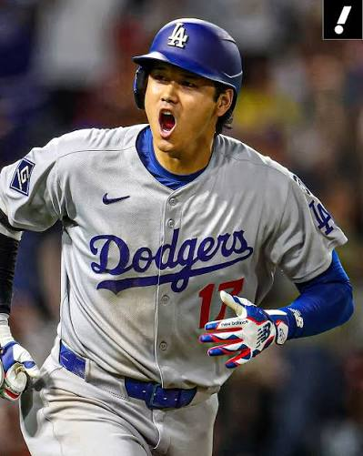
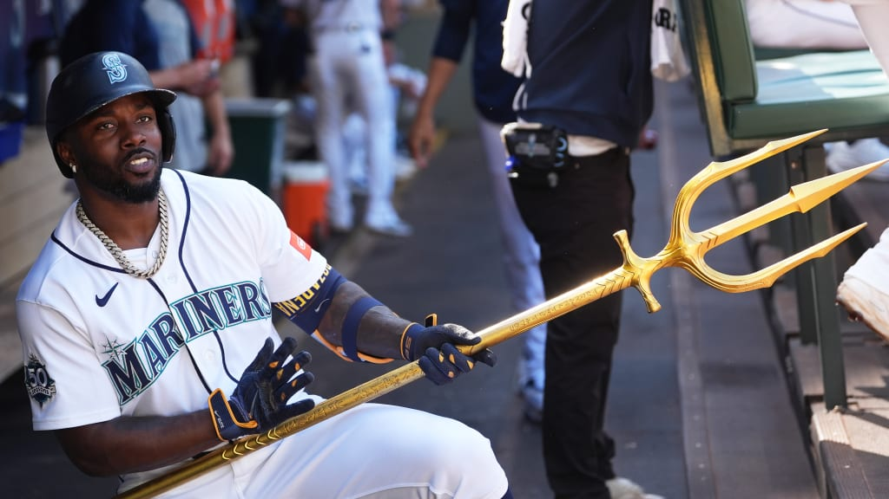
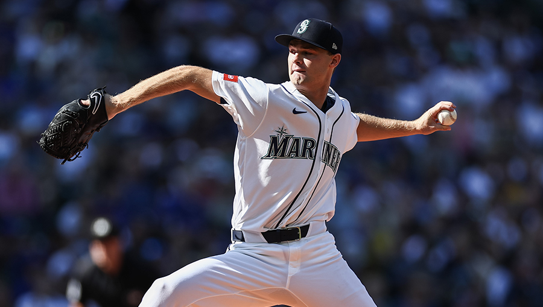
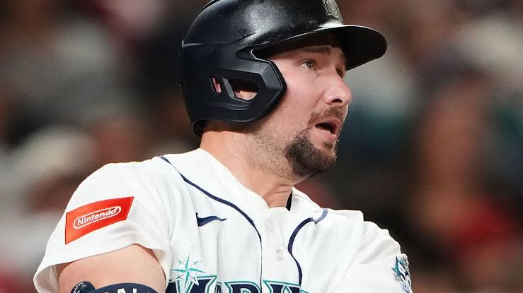
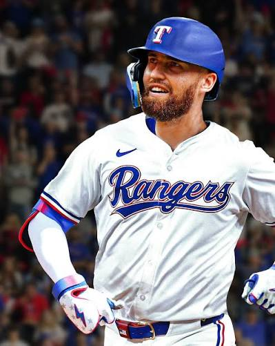

Carlos José Villanueva Ramos
📅 8 Mayo 2026
⚾ Los Cubs y su racha histórica en Wrigley Field
Los Cubs han tenido una impresionante racha ganadora en Wrigley Field, logrando 15 victorias consecutivas, la más larga desde 1935.
El equipo ganó 8-3 contra los Reds, completando una barrida de cuatro juegos. Esta racha es significativa, pues es la primera vez en 91 años que alcanzan dos rachas de al menos siete partidos invictos en casa en una misma temporada.
El pitcher Shota Imanaga mencionó una energía especial en Wrigley que siente durante los partidos, destacando la importancia del apoyo de los aficionados.
Con esta victoria, los Cubs tienen un récord de 19-3 en sus últimos 22 juegos y 18-5 en casa esta temporada.
En el partido, Michael Conforto brilló en su primer juego como titular desde el 29 de abril, bateando 3-3 y abriendo el marcador con un jonrón, con un promedio de bateo de .361 en la temporada.
Los Cubs ahora están solo detrás de los Yankees y los Braves en carreras anotadas en la liga. 🔥
Fuente: MLB.com
Carlos José Villanueva Ramos
📅 18 agosto 2026
⚾ Pete Crow-Armstrong firma una noche épica y fortalece su candidatura al MVP
Pete Crow-Armstrong protagonizó una actuación histórica al conectar un cuadrangular en su primer turno y otro para dejar sobre el terreno a los White Sox por 7-5 en la décima entrada.
Con este jonrón de dos carreras, el jardinero central de los Cubs no solo le dio el triunfo a su equipo en el clásico de la ciudad, sino que alcanzó por segundo año consecutivo la marca de 30 cuadrangulares y 30 bases robadas, hazaña inédita en la franquicia.
Además de irse de 4-4 y rozar el ciclo, PCA incrementó su WAR a 8.2, consolidándose como un fuerte contendiente al MVP de la Liga Nacional.

Fuente: MLB.com
Carlos José Villanueva Ramos
📅 18 agosto 2026
⚾ Carson Benge lidera la victoria de Mets con demostración de brazo histórico
El jardinero novato Carson Benge fue la figura defensiva en la victoria de los Mets 2-1 sobre los Padres en el Citi Field.
Benge hizo historia en la franquicia al retirar a dos corredores en el plato durante la misma primera entrada, ejecutando tiros potentes de 99.9 mph y 103.9 mph para enfriar a Jake Cronenworth y Manny Machado.
Apoyados también por otro out defensivo en home de A.J. Ewing en el tercer episodio, los de Nueva York respaldaron una apertura de seis entradas de Nolan McLean y consiguieron su décimo triunfo en los últimos 13 encuentros.

Fuente: MLB.com
Carlos José Villanueva Ramos
📅 18 agosto 2026
⚾ Shohei Ohtani exhibe su poderío con dos jonrones y avanza en su rehabilitación
Shohei Ohtani tuvo una noche estelar al batear de 4-4 con dos cuadrangulares —acumulando 878 pies entre ambos batazos— en la paliza de los Dodgers 11-5 sobre los Rockies en Coors Field.
El astro japonés llegó a 29 jonrones en la campaña y extendió a 21 su racha de juegos consecutivos conectando de hit en el estadio de Colorado.
La ofensiva angelina respaldó una sólida apertura de seis entradas de Blake Snell.
Tras el encuentro, Ohtani confirmó que se siente recuperado de las molestias en la rodilla y planea realizar una sesión de bullpen para seguir encaminando su regreso al montículo.

Fuente: MLB.com
Carlos José Villanueva Ramos
📅 23 agosto 2026
⚾ Show histórico de Randy Arozarena conduce el electrizante triunfo de los Mariners
Los Mariners de Seattle vencieron 5-4 a los Cubs de Chicago en un cierre dramático.
Randy Arozarena fue la figura indiscutible del encuentro al conectar dos cuadrangulares (uno en el primer lanzamiento del juego y otro de dos carreras para dejar en el campo al rival en la novena entrada) y realizar una de las mejores jugadas defensivas del año al robarle un jonrón a Miguel Amaya en la tercera manga.
Arozarena ingresó al orden al bate de último momento tras una lesión de Brendan Donovan durante la práctica.
Con este resultado, Seattle se colocó a tres juegos del liderato de la División Oeste de la Liga Americana.
Reacciones del partido:
Randy Arozarena (Jardinero de los Mariners):
“Creo que es mi mejor partido.
No esperaba entrar al juego, conectar dos jonrones y robar un jonrón.
Pero sí, fue un día especial para mí... La afición es muy importante para mí porque me ayuda a dar lo mejor de mí.
También me ayuda a divertirme, y siento que cuando me divierto, muestro la mejor versión de mí mismo”.
Kade Anderson (Lanzador de los Mariners):
“Era algo que se veía venir, y Randy es un jugador especial”.
Miguel Amaya (Receptor de los Cubs):
“El plan contra él era tirar basura, él iba a perseguirlo.
Pero le lanzaron esa bola y él estaba preparado”.

Fuente: MLB.com
Carlos José Villanueva Ramos
📅 23 agosto 2026
⚾ El prospecto Kade Anderson deslumbra en su estreno en Las Mayores
El zurdo Kade Anderson, prospecto número uno de la organización de Seattle, tuvo un prometedor debut en las Grandes Ligas frente a los Cubs de Chicago.
Anderson trabajó durante 5 2/3 entradas con cinco ponches, permitiendo tres carreras (dos de ellas mediante jonrones consecutivos al final de su actuación).
A pesar de ese amargo cierre individual, demostró gran temple en un escenario de alta presión en plena contienda de su equipo por la postemporada.
Reacciones del partido:
Kade Anderson (Lanzador de los Mariners):
“Fue una pasada, y el final del partido fue realmente genial...
Obviamente, iba a haber algo de nerviosismo, pero siento que lo controlé bastante bien y lo superé rápidamente.
Es solo otro partido, y siento que cuando tienes esa mentalidad, claramente te calma un poco los nervios”.
Dan Wilson (Mánager de los Mariners):
“Era una oportunidad para que lo rematara.
No salió como esperaba, pero creo que saca muchas cosas positivas de hoy”.

Fuente: MLB.com
Carlos José Villanueva Ramos
📅 25 agosto 2026
⚾ Cal Raleigh hace historia en Seattle tras conectar tres jonrones ante los Phillies
En una noche inspirada, el receptor de los Seattle Mariners, Cal Raleigh, tuvo el primer juego de tres cuadrangulares de su carrera, guiando a su equipo a un contundente triunfo de 9-2 frente a los Philadelphia Phillies.
La actuación del máscara no solo cortó la racha de nueve victorias consecutivas de Filadelfia, sino que le da un impulso vital a Seattle en la recta final por meterse a la postemporada.
Datos clave de la gesta
Anotadores: Raleigh castigó con dos batazos al abridor Zack Wheeler (en el primer y quinto episodio) y cerró su cuenta en el séptimo inning ante el relevista Chase Shugart.
Hito inédito: Es el primer jugador de los Mariners que logra un juego de tres jonrones en la historia del T-Mobile Park desde que se inauguró en 1999.
Club selecto de receptores: Se convirtió en apenas el segundo catcher en la historia de la franquicia con un juego de tres bambinazos, uniéndose a su actual mánager, Dan Wilson (quien lo consiguió en 1996).
Escalando listas: Raleigh llegó a 22 partidos con múltiples cuadrangulares, igualando a leyendas del equipo como Jay Buhner y Edgar Martínez en el segundo lugar histórico de la franquicia (solo por detrás de Ken Griffey Jr.).
Despertar en el momento oportuno
Aunque Raleigh venía firmando una temporada discreta comparada con su histórico 2025 —donde llegó a los 60 jonrones—, sus métricas de agosto muestran que está recuperando la potencia en sus batazos.
Con solo un mes por delante en la temporada regular, este despertar ofensivo es justo lo que Seattle necesita para asegurar su boleto a la postemporada.
💬 Reacción destacada
Tras la hazaña de su pupilo al unirse a él como los únicos receptores de los Mariners con un juego de tres jonrones, el mánager Dan Wilson comentó entre risas sobre la comparación entre ambas actuaciones:
“Creo que no hay comparación”, bromeó el dirigente al ser cuestionado tras la victoria.

Fuente: MLB.com
Carlos José Villanueva Ramos
📅 25 agosto 2026
⚾ Robo monumental en el jardín derecho asegura el triunfo de Texas
En el primer episodio del duelo entre los Rangers de Texas y los White Sox de Chicago, Brandon Nimmo realizó una jugada espectacular en la pradera derecha.
Con la pizarra 2-0 a favor de Texas, el jardinero calculó a la perfección su salto para atrapar sobre la barda un batazo de Andrew Benintendi que amenazaba con empatar el encuentro.
Esa jugada defensiva evitó la reacción de Chicago y le dio tranquilidad al abridor de segundo año Kumar Rocker (quien completó $5\frac{2}{3}$ entradas de dos carreras).
A partir de ese momento, Texas dominó el ritmo del juego y terminó sellando una abultada victoria por 11-2.
Declaraciones destacadas"Hay algo de arte en robar jonrones.
Logré calcular bien el momento... Fue un cambio de impulso enorme en un momento clave del partido."— Brandon Nimmo, jardinero derecho de los Rangers.
"Todas las vallas deberían medir como cinco pies para que hubiera más jugadas como esa... Fue una jugada realmente excelente que mantuvo el impulso de nuestro lado."— Skip Schumaker, mánager de los Rangers.
"Fallé ese señuelo, él lo atrapó... La verdad, habría sido una jornada normal y corriente sin que él lo atrapara."— Kumar Rocker, lanzador abridor de los Rangers.

Fuente: MLB.com